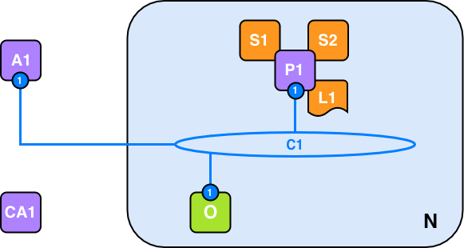
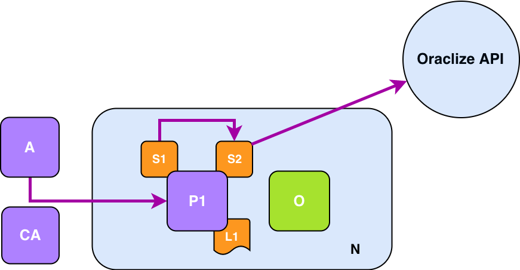

Home
Welcome to the Documentation of Provable!
The documentation is divided in the following sections:
- Background: the rationale behind the Provable's Oracle Model
- General Concepts: the main concepts behind Provable
- Data-Sources: information regarding the types of data sources Provable supports
- Integrations: how to integrate a blockchain application with Provable
- Development Tools: a list of tools to aide development of Provable-integrated smart contracts
- Security Deep Dive: how Provable's Authenticity proofs works
- Pricing: information on our pricing model for production uses
- Tutorials: tutorials on our Provable integrations
Background
Provable is the leading oracle service for smart contracts and blockchain applications, serving thousands of requests every day on platforms like Ethereum, Rootstock, R3 Corda, Hyperledger Fabric and EOS.
In the blockchain space, an oracle is a party which provides data. The need for such figure arise from the fact that blockchain applications, such as Bitcoin scripts and smart contracts cannot access and fetch directly the data they require: price feeds for assets and financial applications; weather-related information for peer-to-peer insurance; random number generation for gambling.
But to rely on a new trusted intermediary, the oracle in this case, it would be betraying the security and reduced-trust model of blockchain applications: which is what makes them interesting and useful in first place.
One solution is to accept data inputs from more than one untrusted or partially trusted party and then execute the data-dependent action only after a number of them have provided the same answer or an answer within some constrains. This type of system can be considered a decentralized oracle system. Unfortunately, this approach has severe limitations:
- It requires a predefined standard on data format
- It is inherently inefficient: all the parties participating will require a fee and, for every request, it will take time before reaching a sufficient number of answers.
The solution developed by Provable is instead to demonstrate that the data fetched from the original data-source is genuine and untampered. This is accomplished by accompanying the returned data together with a document called authenticity proof. The authenticity proofs can build upon different technologies such as auditable virtual machines and Trusted Execution Environments.
A more detailed overview of Provable authenticity proofs is provided in the Authenticity Proofs section of this documentation.
This solution elegantly solves the Oracle Problem:
- Blockchain Application's developers and the users of such applications don't have to trust Provable; the security model is maintained.
- Data providers don't have to modify their services in order to be compatible with blockchain protocols. Smart contracts can directly access data from Web sites or APIs.
Provable engine can be easily integrated with both private and public instances of different blockchain protocols.
While building the service, the Provable team has realized that the concept of authenticity proofs has much broader applicability than initially envisioned. For example, the Provable Random Data-source can be used even by traditional gambling applications to ensure users of continuous fairness of operation
General Concepts
Provable is integrated with a number of blockchain protocols and its service is useful and accessible also for non-blockchain applications. In the following section, general concepts which apply to all integrations will be explained.
Provable Engine
The Provable Engine powers the service for both blockchain-based and non-blockchain-based application. Internally replicates an "If This Then That" logical model. This means that it will execute a given set of instructions if some other given conditions are met. For example, it could repeatedly verify a condition and only return data or perform an action when the condition has been met. This flexibility enables the engine to be leveraged in many different ways and contexts, even outside of the blockchain context.
A valid request for data to Provable, done via the native blockchain integration or via the HTTP API, should specify the following arguments:
- A data source type
- A query
- Optionally, an authenticity proof type
Data Source Types
A data source is a trusted provider of data. It can be a website or web API such as Reuters, Weather.com, BBC.com, or a secure application running on an hardware-enforced Trusted Execution Environment (TEE) or an auditable, locked-down virtual machine instance running in a cloud provider. Provable currently offers the following types of native data sources:
- URL: enables the access to any webpage or HTTP API endpoint
- WolframAlpha: enables native access to WolframAlpha computational engine
- IPFS: provides access to any content stored on an IPFS file
- random: provides untampered random bytes coming from a secure application running on a Ledger Nano S.
- computation: provides the result of arbitrary computation
Additionaly, there also some meta data source such as:
- nested: enables the combination of different types of data source or multiple requests using the same data source, and it returns an unique result
- identity: it returns the query
- decrypt: it decrypts a string encrypted to the Provable private key
Query
A query is an array of parameters which needs to be evaluated in order to complete a specific data source type request: query: [ parameter_1, parameters_2, ...];
The first parameter is the main argument and it is usually mandatory. For example, in the case of the URL Data Source Type, the first argument is the expected URL where the resource resides. If only the first argument is present, then the URL Data Source assumes that an HTTP GET was requested. The second parameters, which it is optional, should contain the data payload of the HTTP POST request.
The intermediate result of a query may need to be parsed: for example, to extract a precise field in JSON API response. Therefore, the query can also specify parsing helpers to be applied.
Parsing Helpers
Provable offers JSON, XML, XHTML and a binary parser helpers. Examples:
- JSON Parsing: To extract the value of a specific element from a JSON document, you may use our built-in JSON parser. An example usage case, for extracting the ETH/USD price field from the Kraken API, serving it as a JSON doc, is by surrounding the API endpoint in question with the helper as follows:
json(https://api.kraken.com/0/public/Ticker?pair=ETHUSD).result.XETHZUSD.c.0. - XML Parser: To extract the value of a specific element from an XML document, you may use our built-in XML parser. An example usage case, for extracting the diesel price from an API serving it as an XML doc, is by surrounding the API endpoint in question with the helper as follows:
xml(https://www.fueleconomy.gov/ws/rest/fuelprices).fuelPrices.diesel. - HTML Parser: Useful for HTML scraping. The desired XPATH can be specified as argument of
xpath(..)as shown in the example:html(https://twitter.com/oraclizeit/status/671316655893561344).xpath(//*[contains(@class, 'tweet-text')]/text()). - Binary Helper: It can be useful to extract parts of a binary intermediate result by using the
slice(offset,length)operator. The first parameter is the expected to be the offset, while the second one is the length of the returned slice. For example,binary(https://www.sk.ee/crls/esteid/esteid2015.crl).slice(0,300)returns the raw bytes of the first certificate of the linked certificate revocation list. Binary helper must be used with the slice option and only raw binary inputs are accepted
Please, note that the Provable Test Query Page tool, can be useful to test any Provable Query leveraging the Parsing Helpers. More details in the "Development Tools Test Query" section.
Authenticity Proofs
Provable is designed to act as an untrusted intermediary. Optionally, a request to Provable can specify an authenticity proof. Not all proofs are compatible with all data source types. More details on the authenticity proofs can be found in the "Security Deep Dive" section.
Data Privacy
Certain contexts, such as smart contracts on public blockchains, might require a level of privacy to protect data from public scrutiny. Developers can make encrypted Provable queries by encrypting an entire query or some of its arguments with the Provable public key. More information can be found in the Encrypted Queries section.
Data Sources
Listed here are the data-sources you can choose from when using our oracle service.
Please note that datasource selection is not case-sensitive.
| None | TLSNotary | Android | Ledger | |
| URL | ✓ | ✓ | ✓ | N/A |
| Random | N/A | N/A | N/A | ✓ |
| WolframAlpha | ✓ | N/A | N/A | N/A |
| IPFS 1 | ✓ | N/A | N/A | N/A |
| computation 1 | ✓ | ✓ | N/A | N/A |
URL
The URL data source type enables access to any API or web page on the Internet. It supports both HTTP GET and HTTP POST request.
If only one parameters is specified in the query, the service will default to perform an HTTP GET request. If a second parameter is specified, then the service will perform an HTTP POST request, posting the second parameter as data. Note that if the second parameter is valid JSON, then it will be posted as such. The URL data source type supports TLSNotary Proofs and Android Proofs.
More advanced HTTP capabilities, such as Basic Authentication or OAuth, can be build by leveraging the computation data source type.
WolframAlpha
The WolframAlpha data source type enables direct access to the WolframAlpha Knowledge Engine API. This datasource expects as sole parameter the string which should be passed to WolframAlpha. It will returns the result as a string.
IPFS
The IPFS data source type can be used to retrieve the content of a file on the IPFS network.
This datasource expects as sole parameter the IPFS multihash in the query. For example, the file QmT78zSuBmuS4z925WZfrqQ1qHaJ56DQaTfyMUF7F8ff5o would return `"hello world\n".
If Provable fails to fetch the IPFS content within 20 seconds, the request will fail.
computation
# Content of the Dockerfile
FROM ubuntu:14.04
MAINTAINER Provable "info@oraclize.it"
RUN apt-get update && apt-get install -y python-numpy
CMD python -c "import numpy; print int(numpy.linalg.det(numpy.array([[1,2,3],[7,2,3],[7,6,3]])))"
# How to create the zip archive and upload it on IPFS
user@locahost:~$ ipfs daemon
# In a new terminal:
user@locahost:~$ zip -r archive.zip *
user@locahost:~$ ipfs add archive.zip
added QmRxtL9K2de7v7QBYCCrwcjZHjYmuKggZ8xaqZ6UUWvd1s archive.zip
# Alternative:
user@locahost:~$ zip -r archive.zip *
user@locahost:~$ curl -F "data=@./archive.zip" https://ipfs.infura.io:5001/api/v0/add
{"Name":"archive.zip","Hash":"QmPz9JxrP8A8pZmtgHZtPwJuTKiaHqU92UzeUDzKDvEz9Q","Size":"548"}
# Persistance of the file is not garanteed. To make sure it stays online you
# should run your IPFS node / IPFS daemon and keep the archive pinned (pin archive.zip) on your machine.
The computation datasource enables the auditable execution of an application or a script by leveraging a sandboxed Amazon Web Service virtual machine.
The application has to print, on standard output, the result of the computation as the last line before it quits. The result can be up to 2500 characters long. The execution context has to be described by a Dockerfile, where building and running it should start the main application straight away. Currently Provable only provides one type of auditable instance: a t2.micro instance. The Dockerfile initialization and application execution should terminate as soon as possible, as the execution time is capped at 5 minutes. (Current Docker version used for computation ds is 1.12.1)
The developer can send to Provable the application binary or the script, its dependency and the Dockerfile by creating an archive and uploading it to IPFS. The query expects as first argument the IPFS multihash of that archive, while the following arguments will be passed to the execution environment as environmental variables, making them accessible by the application.
random
The design described there prevents Provable from tampering with the random results coming from the Trusted Execution Environment (TEE) and protects the user from a number of attack vectors.
The authenticity proof, attached with the result, can be easily verified not just off-chain but even by any Solidity contract receiving them. The example presented here, showing how to integrate the verification process, discards any random result whose authenticity proofs don't pass the verification process.
The random datasource is leveraging the Ledger proof to prove that the origin of the generated randomness is really a secure Ledger device.
The rationale behind this method of securely feeding off-chain randomness into the blockchain is explained in the “A Scalable Architecture for On-Demand, Untrusted Delivery of Entropy” white paper.
decrypt
Even though the decrypt datasource can be used as any other, it was specifically designed to be used within the nested datasource to enable partial query encryption.
The result is the decrypted query string. Please note that all the logic, limitations and tools provided by the Encryption feature apply here as well.
nested
The nested datasource is a meta datasource, it does not provide access to additional services. It was designed to provide some simple aggregation logic, enabling a single query to leverage sub-queries based on any available datasource and produce a single string as a result.
The query format is built in a way you that you can specify a sub-datasource and a sub-query as follows: [datasource_name] query_content.
Please mind the square brackets delimiting the datasource name and the whitespace prefixing the actual sub-query. The sub-query content can optionally be delimited by either single or double quotes.
You can optionally specify more than one sub-query, by using as delimitators the ${ special opener and the } special closer.
Example: [WolframAlpha] temperature in ${[IPFS] QmP2ZkdsJG7LTw7jBbizTTgY1ZBeen64PqMgCAWz2koJBL}
Integrations
Public Chains
Provable is integrated natively with the most widely used public blockchain protocols like the Ethereum, Bitcoin, Rootstock, EOS mainnets and testnets.
Alternative Public Chains
Provable is constantly studying new public blockchain protocols and considering further blockchain integrations. Since the Provable Engine is completely blockchain agnostic and can interact via HTTP API, developers are encouraged to work on open-source independent Provable integration on the model of the Ethereum-Bridge.
Private Ethereum-based Chains
Private, Ethereum-based chains can currently integrate with Provable by using the Ethereum-Bridge. Forks of Ethereum such as Monax included. More information on how to use the Ethereum-Bridge will become available in the development tools section or refer to this StackExchange answer describing how to use it alongside testrpc.
Alternative Private Chains
Provable can already be used in most private chains, in case you were interested in using it in a context where it is not integrated yet please reach out to us.
Non-blockchain Applications
The oraclize-lib enables the use of the Provable engine capabilities also in a non-blockchain context, by providing an abstraction layer which resolves to Provable HTTP API. The oraclize-lib is currently in an experimental stage.
♦ Ethereum
The following section is dedicated to the Ethereum and Provable integration. To better profit from this section of the documentation, previous knowledge of Solidity and Ethereum is required.
The interaction between Provable and an Ethereum smart contract is asynchronous. Any request for data is composed of two steps:
- Firstly, in the most common case, a transaction executing a function of a smart contract is broadcasted by a user. The function contains a special instruction which manifest to Provable, who is constantly monitoring the Ethereum blockchain for such instruction, a request for data.
- Secondly, according to the parameters of such request, Provable will fetch or compute a result, build, sign and broadcast the transaction carrying the result. In the default configuration, such transaction will execute the
__callbackfunction which should be placed in the smart contract by its developer: for this reason, this transaction is referred in the documentation as the Provable callback transaction.
As said in previous sections, one of the fundamental characteristics of Provable is the capability of returning data to a smart contract together with one or more proofs of authenticity of the data. The generation of an authenticity proof is optional and it is a contract-wide setting which must be configured by the smart contract developer before the request for data is initiated. Provable always recommends the use of authenticity proofs for production deployments.
Quick Start
pragma solidity ^0.4.22;
import "github.com/provable-things/ethereum-api/provableAPI_0.4.25.sol";
contract ExampleContract is usingProvable {
string public ETHUSD;
event LogConstructorInitiated(string nextStep);
event LogPriceUpdated(string price);
event LogNewProvableQuery(string description);
function ExampleContract() payable {
LogConstructorInitiated("Constructor was initiated. Call 'updatePrice()' to send the Provable Query.");
}
function __callback(bytes32 myid, string result) {
if (msg.sender != provable_cbAddress()) revert();
ETHUSD = result;
LogPriceUpdated(result);
}
function updatePrice() payable {
if (provable_getPrice("URL") > this.balance) {
LogNewProvableQuery("Provable query was NOT sent, please add some ETH to cover for the query fee");
} else {
LogNewProvableQuery("Provable query was sent, standing by for the answer..");
provable_query("URL", "json(https://api.pro.coinbase.com/products/ETH-USD/ticker).price");
}
}
}
The most simple way to introduce the Ethereum - Provable integration, it is by showing a working example, such as the smart contract on the right. This contract uses Provable to fetch the last ETH/USD from Coinbase Pro APIs. The update process is initiated every time the function updatePrice() is called. The example shows two important components of using Provable:
- The contract should be a child of the contract usingProvable
- The contract usingProvable is defined in the provableAPI file, which can be fetched from the dedicated Provable Github repository.
The code in the example is working out of the box if Remix is used to compile and deploy it on any of the Ethereum networks: main-net and the Ropsten, Kovan and Rinkeby testnets. If, instead, another tool is used, it will be necessary to replace the import statement with a local import of the provableAPI_0.4.25.sol file since direct import from Github may not be supported.
To ease development, Provable doesn't charge a contract for its first request of data done using the default gas parameters. Successive requests will require the contract to pay the Provable fee and the ether necessary to pay for the callback transaction. Both are automatically taken from the contract balance. If the contract doesn't have enough funds in his balance, the request will fail and Provable won't return any data.
Simple Query
// This code example will ask Provable to send as soon as possible
// a transaction with the primary result (as a string) of the given
// formula ("random number between 0 and 100") fetched from the
// data-source "WolframAlpha".
provable_query("WolframAlpha", "random number between 0 and 100");
provable_query("URL", "https://api.kraken.com/0/public/Ticker?pair=ETHXBT")
provable_query("URL",
"json(https://www.therocktrading.com/api/ticker/BTCEUR).result.0.last")
provable_query("IPFS", "QmdEJwJG1T9rzHvBD8i69HHuJaRgXRKEQCP7Bh1BVttZbU")
// The URL datasource also supports a supplement argument, useful for creating HTTP POST requests.
// If that argument is a valid JSON string, it will be automatically sent as JSON.
provable_query("URL", "json(https://shapeshift.io/sendamount).success.deposit",
'{"pair":"eth_btc","amount":"1","withdrawal":"1AAcCo21EUc1jbocjssSQDzLna9Vem2UN5"}')
A request for data is called query. The provable_query is a function, inhered from the parent usingProvable contract, which expects at least two arguments:
- A data-source such as
URL,WolframAlpha,IPFS, 'Swarm' and others listed here - The argument for the given data-source. For examples:
- the full
URL, which may inclued the use of JSON or XML parsing helpers as it can be seen in the previous example - or a
WolframAlphaformula - or an
IPFSmultihash
- the full
The number and type of supported arguments depends from the data-source in use. Beside, few more code example will be shown and commented. The datasource, as well as the authenticity proof chosen, determine the fee which the contract has to pay to Provable.
Schedule a Query in the Future
// Relative time: get the result from the given URL 60 seconds from now
provable_query(60, "URL",
"json(https://api.kraken.com/0/public/Ticker?pair=ETHXBT).result.XETHXXBT.c.0")
// Absolute time: get the result from the given datasource at the specified UTC timestamp in the future
provable_query(scheduled_arrivaltime+3*3600,
"WolframAlpha", strConcat("flight ", flight_number, " landed"));
The execution of a query can be scheduled in a future date. The function provable_query accepts as a parameter the delay in seconds from the current time or the timestamp in the future as first argument.
Please note that in order for the future timestamp to be accepted by Provable it must be within 60 days of the current UTC time in the case of the absolute timestamp choice, or in the case of a relative time elapse, the elapsed seconds must equate to no more than 60 days.
Recursive Queries
pragma solidity ^0.4.22;
import "github.com/provable-things/ethereum-api/provableAPI_0.4.25.sol";
contract ExampleContract is usingProvable {
string public ETHUSD;
event LogConstructorInitiated(string nextStep);
event LogPriceUpdated(string price);
event LogNewProvableQuery(string description);
function ExampleContract() payable {
LogConstructorInitiated("Constructor was initiated. Call 'updatePrice()' to send the Provable Query.");
}
function __callback(bytes32 myid, string result) {
if (msg.sender != provable_cbAddress()) revert();
ETHUSD = result;
LogPriceUpdated(result);
updatePrice();
}
function updatePrice() payable {
if (provable_getPrice("URL") > this.balance) {
LogNewProvableQuery("Provable query was NOT sent, please add some ETH to cover for the query fee");
} else {
LogNewProvableQuery("Provable query was sent, standing by for the answer..");
provable_query(60, "URL", "json(https://api.pro.coinbase.com/products/ETH-USD/ticker).price");
}
}
Smart contracts using Provable can be effectively autonomous by implementing a new call to Provable into their __callback method.
This can be useful for implementing periodic updates of some on-chain reference data, as with price feeds, or to periodically check for some off-chain conditions.
This modified version of the previous example will update the ETH/USD exchange rate every 60 seconds, until the contract has enough funds to pay for the Provable fee.
The Query ID
pragma solidity ^0.4.22;
import "github.com/provable-things/ethereum-api/provableAPI_0.4.25.sol";
contract ExampleContract is usingProvable {
string public ETHUSD;
mapping(bytes32=>bool) validIds;
event LogConstructorInitiated(string nextStep);
event LogPriceUpdated(string price);
event LogNewProvableQuery(string description);
function ExampleContract() payable {
LogConstructorInitiated("Constructor was initiated. Call 'updatePrice()' to send the Provable Query.");
}
function __callback(bytes32 myid, string result) {
if (!validIds[myid]) revert();
if (msg.sender != provable_cbAddress()) revert();
ETHUSD = result;
LogPriceUpdated(result);
delete validIds[myid];
updatePrice();
}
function updatePrice() payable {
if (provable_getPrice("URL") > this.balance) {
LogNewProvableQuery("Provable query was NOT sent, please add some ETH to cover for the query fee");
} else {
LogNewProvableQuery("Provable query was sent, standing by for the answer..");
bytes32 queryId =
provable_query(60, "URL", "json(https://api.pro.coinbase.com/products/ETH-USD/ticker).price");
validIds[queryId] = true;
}
}
}
Every time the function provable_query is called, it returns a unique ID, hereby referred to as queryId, which depends from the number of previous requests and the address of smart contract.
The queryId identifies a specific query done to Provable and it is returned to the contract as a parameter of the callback transaction.
Provable recommends smart contract developers to verify if the queryId sent by the callback transaction was generated by a valid call to the provable_query function, as shown in the example accompanying this paragraph. This ensures that each query response is processed only once and helps avoid misuse of the smart contract logic. Moreover, it protects the smart contract during blockchain reorganizations, as explained in the dedicated paragraph of this section.
The queryId can be used as well to implement different behaviors into the __callback function, in particular when there is more than one pending call from Provable.
Custom Gas Limit and Gas Price
pragma solidity ^0.4.22;
import "github.com/provable-things/ethereum-api/provableAPI_0.4.25.sol";
contract ExampleContract is usingProvable {
string public ETHUSD;
mapping(bytes32=>bool) validIds;
event LogConstructorInitiated(string nextStep);
event LogPriceUpdated(string price);
event LogNewProvableQuery(string description);
// This example requires funds to be send along with the contract deployment
// transaction
function ExampleContract() payable {
provable_setCustomGasPrice(4000000000);
LogConstructorInitiated("Constructor was initiated. Call 'updatePrice()' to send the Provable Query.");
}
function __callback(bytes32 myid, string result) {
if (!validIds[myid]) revert();
if (msg.sender != provable_cbAddress()) revert();
ETHUSD = result;
LogPriceUpdated(result);
delete validIds[myid];
updatePrice();
}
function updatePrice() payable {
if (provable_getPrice("URL") > this.balance) {
LogNewProvableQuery("Provable query was NOT sent, please add some ETH to cover for the query fee");
} else {
LogNewProvableQuery("Provable query was sent, standing by for the answer..");
bytes32 queryId =
provable_query(60, "URL", "json(https://api.pro.coinbase.com/products/ETH-USD/ticker).price", 500000);
validIds[queryId] = true;
}
}
}
The transaction originating from Provable to the __callback function pays a fee to the miner which include the transaction in a block, just like any other transaction. The miner fee is paid in Ether and it is calculated by taking the amount of gas which covers the execution costs of the transaction multiplied by the selected gas/ether price. Provable will set those parameters accordingly to the parameters specified in the smart contract, for contract-wide settings, and in the provable_query function, for query-specific settings. The miner fee for the callback transaction is taken from the contract balance when the query transaction is executed.
If no settings are specified, Provable will use the default values of 200,000 gas and 20 GWei. This last value is on the higher-end of the pricing spectrum right now, but it helps having faster confirmation times during network-wide congestions.
A different value for the Provable callback gas can be passed as the argument _gasLimit to the provable_query function as shown in the following examples.
// If the callback transaction requires little gas, the value can be lowered:
provable_query("URL", "json(https://api.pro.coinbase.com/products/ETH-USD/ticker).price", 100000);
// Callback methods may be expensive. The example requires the JSON parsing
// a string in the smart contract. If that's the case, the gas should be increased:
provable_query("URL", "https://api.pro.coinbase.com/products/ETH-USD/ticker", 500000);
The gas price of the callback transaction can be set by calling the provable_setCustomGasPrice function, either in the constructor, which is executed once at deployment of the smart contract, or in a separate function. The following is the ExampleContract modified to specify a custom gas price of 4 Gwei and a custom gas limit for the callback transaction.
Smart contract developers should estimate correctly and minimize the cost of their __callback method, as any unspent gas will be returned to Provable and no refund is available.
Authenticity Proofs
pragma solidity ^0.4.22;
import "github.com/provable-things/ethereum-api/provableAPI_0.4.25.sol";
contract ExampleContract is usingProvable {
string public ETHUSD;
mapping(bytes32=>bool) validIds;
event LogConstructorInitiated(string nextStep);
event LogPriceUpdated(string price);
event LogNewProvableQuery(string description);
// This example requires funds to be send along with the contract deployment
// transaction
function ExampleContract() payable {
provable_setCustomGasPrice(4000000000);
provable_setProof(proofType_TLSNotary | proofStorage_IPFS);
LogConstructorInitiated("Constructor was initiated. Call 'updatePrice()' to send the Provable Query.");
}
function __callback(bytes32 myid, string result, bytes proof) {
if (!validIds[myid]) revert();
if (msg.sender != provable_cbAddress()) revert();
ETHUSD = result;
LogPriceUpdated(result);
delete validIds[myid];
updatePrice();
}
function updatePrice() payable {
if (provable_getPrice("URL") > this.balance) {
LogNewProvableQuery("Provable query was NOT sent, please add some ETH to cover for the query fee");
} else {
LogNewProvableQuery("Provable query was sent, standing by for the answer..");
bytes32 queryId =
provable_query(60, "URL", "json(https://api.pro.coinbase.com/products/ETH-USD/ticker).price", 500000);
validIds[queryId] = true;
}
}
}
Authenticity proofs are at the core of Provable's oracle model. Smart contracts can request authenticity proofs together with their data by calling the provable_setProof function available in the usingProvable contract. The authenticity proof can be either delivered directly to the smart contract or it can be saved, uploaded and stored on some alternate storage medium like IPFS.
When a smart contract requests for an authenticity proof, it must define a different callback function with the following arguments: function __callback(bytes32 queryId, string result, bytes proof)
The provable_setProof function expects the following format: provable_setProof(proofType_ | proofStorage_ )
Both proofType and proofStorage are byte constants defined in usingProvable:
Available parameters for proofTypes are:
proofType_NONE: the default value of any smart contractsproofType_TLSNotary: available only on the Ethereum MainnetproofType_AndroidproofType_NativeproofType_Ledger
While for proofStorage:
proofStorage_IPFS
For example, provable_setProof(proofType_TLSNotary) will return the full TLSNotary Proof bytes as the proof argument in the callback transaction. If instead provable_setProof(proofType_TLSNotary | proofStorage_IPFS) is used, then Provable will return only the base58-decoded IPFS multihash as the proof argument. To obtain the IPFS multihash, the bytes must be encoded to base58.
The method provable_setProof can be executed in the constructor, becoming a contract-wide lasting setting, or it can be set directly before a specific query is to be made. Authenticity proofs can be disabled by calling provable_setProof(proofType_NONE). Smart contract developer should be aware that the helper method provable_setProof is an internal function of usingProvable, and therefore it must be included specifically in their smart contract at compile time, before deployment.
The following builds on our previous example:
Verifiability
Supported proofs can be verified. The following tools can be used: Verification Tools
Best Practices
Precalculating the Query Price
pragma solidity ^0.4.22;
import "github.com/provable-things/ethereum-api/provableAPI_0.4.25.sol";
contract KrakenPriceTicker is usingProvable {
string public ETHXBT;
uint constant CUSTOM_GASLIMIT = 150000;
event LogConstructorInitiated(string nextStep);
event newProvableQuery(string description);
event newKrakenPriceTicker(string price);
function KrakenPriceTicker() {
provable_setProof(proofType_TLSNotary | proofStorage_IPFS);
LogConstructorInitiated("Constructor was initiated. Call 'update()' to send the Provable Query.");
}
function __callback(bytes32 myid, string result, bytes proof) {
if (msg.sender != provable_cbAddress()) revert();
ETHXBT = result;
newKrakenPriceTicker(ETHXBT);
}
function update() payable {
if (provable_getPrice("URL", CUSTOM_GASLIMIT) > this.balance) {
newProvableQuery("Provable query was NOT sent, please add some ETH to cover for the query fee");
} else {
newProvableQuery("Provable query was sent, standing by for the answer..");
provable_query("URL", "json(https://api.kraken.com/0/public/Ticker?pair=ETHXBT).result.XETHXXBT.c.0", CUSTOM_GASLIMIT);
}
}
}
You have to consider that your account will be debited for most of your Provable calls. If your contract is not covered with enough ETH, the query will fail. Depending on your contract logic you may want to check the price for your next query before it gets send. You can do this by calling provable_getPrice and check if it is higher than your current contract balance. If that's the case the provable_query will fail and you may want to handle it gracefully. You can also add a gaslimit parameter to the provable_getPrice function: provable_getPrice(string datasource, uint gaslimit). Make sure that the custom gaslimit for provable_getPrice matches with the one you will use for provable_query.
Mapping Query Ids
pragma solidity ^0.4.22;
import "github.com/provable-things/ethereum-api/provableAPI_0.4.25.sol";
contract ExampleContract is usingProvable {
string public ETHUSD;
event LogConstructorInitiated(string nextStep);
event LogPriceUpdated(string price);
event LogNewProvableQuery(string description);
mapping (bytes32 => bool) public pendingQueries;
function ExampleContract() payable {
LogConstructorInitiated("Constructor was initiated. Call 'updatePrice()' to send the Provable Query.");
}
function __callback(bytes32 myid, string result) {
if (msg.sender != provable_cbAddress()) revert();
require (pendingQueries[myid] == true);
ETHUSD = result;
LogPriceUpdated(result);
delete pendingQueries[myid]; // This effectively marks the query id as processed.
}
function updatePrice() payable {
if (provable_getPrice("URL") > this.balance) {
LogNewProvableQuery("Provable query was NOT sent, please add some ETH to cover for the query fee");
} else {
LogNewProvableQuery("Provable query was sent, standing by for the answer..");
bytes32 queryId = provable_query("URL", "json(https://api.pro.coinbase.com/products/ETH-USD/ticker).price");
pendingQueries[queryId] = true;
}
}
}
It might occur that a callback function of a sent query gets called more than once. Therefore it might be helpful to initiate a mapping that manages the query ids and their states. When the callback function of a query gets called, the require statement checks if the current query id needs to be processed. After one successful iteration the id gets deleted to prevent further callbacks for that particular id.
Advanced Topics
Encrypted Queries
Certain contexts, such as smart contracts on public blockchains, might require a level of privacy to protect data from public scrutiny. Developers can make encrypted Provable queries by encrypting a part (or all) of a query with the Provable public key. The encrypted queries feature may be of interested to developers who want to deploy their blockchain applications of public networks. For example, if an application leverages data from an authenticated API, it would be dangerous to disclose the API key to anyway who is monitoring the public chain.
Provable therefore offers the possibility of encrypting the parameters contained in a query to Provable's public key: 044992e9473b7d90ca54d2886c7addd14a61109af202f1c95e218b0c99eb060c7134c4ae46345d0383ac996185762f04997d6fd6c393c86e4325c469741e64eca9
Only Provable will then be able to decrypt the request using its paired private key.
To encrypt the query, Provable provides a CLI tool, which can be found here. Alternatively, The CLI command to encrypt an arbitrary string of text is then:
python encrypted_queries_tools.py -e -p 044992e9473b7d90ca54d2886c7addd14a61109af202f1c95e218b0c99eb060c7134c4ae46345d0383ac996185762f04997d6fd6c393c86e4325c469741e64eca9 "YOUR QUERY"
This will encrypt the query with the default Provable public key. The encrypted string can then be used as an argument for an Provable query.
// In this example, the entire first argument of an provable_query has been encrypted.
// The actual string encrypted is: json(https://poloniex.com/public?command=returnTicker).BTC_ETH.last
provable_query("URL","AzK149Vj4z65WphbBPiuWQ2PStTINeVp5sS9PSwqZi8NsjQy6jJLH765qQu3U/
bZPNeEB/bYZJYBivwmmREXTGjmKJk/62ikcO6mIMQfB5jBVVUOqzzZ/A8ecWR2nOLv0CKkkkFzBYp2sW1H
31GI+SQzWV9q64WdqZsAa4gXqHb6jmLkVFjOGI0JvrA/Zh6T5lyeLPSmaslI");
The encryption method is also available for POST requests: you can encrypt both the URL and the POST data field as in the following example:
// This is the query that we want to encrypt
provable_query("URL","json(https://api.postcodes.io/postcodes).status",
'{"postcodes" : ["OX49 5NU", "M32 0JG", "NE30 1DP"]}')
Encrypt the datasource (URL in this case):
python encrypted_queries_tools.py -e -p 044992e94... "URL"
Returns:
BEIGVzv6fJcFiYQNZF8ArHnvNMAsAWBz8Zwl0YCsy4K/RJTN8ERHfBWtSfYHt+uegdD1wtXTkP30sTW+3xR3w/un1i3caSO0Rfa+wmIMmNHt4aOS
Encrypt the argument(in this case we are using the JSON parsing helper to retrieve the "status" ):
python encrypted_queries_tools.py -e -p 044992e94... "json(https://api.postcodes.io/postcodes).status"
Returns:
BNKdFtmfmazLLR/bfey4mP8v/R5zCIUK7obcUrF2d6CWUMvKKUorQqYZNu1YfRZsGlp/F96CAQhSGomJC7oJa3PktwoW5J1Oti/y2v4+b5+vN8yLIj1trS7p1l341Jf66AjaxnoFPplwLqE=
Encrypt the JSON (third argument, the data to POST):
python encrypted_queries_tools.py -e -p 044992e94... '{"postcodes" : ["OX49 5NU", "M32 0JG", "NE30 1DP"]}'
Returns:
BF5u1td9ugoacDabyfVzoTxPBxGNtmXuGV7AFcO1GLmXkXIKlBcAcelvaTKIbmaA6lXwZCJCSeWDHJOirHiEl1LtR8lCt+1ISttWuvpJ6sPx3Y/QxTajYzxZfQb6nCGkv+8cczX0PrqKKwOn/Elf9kpQQCXeMglunT09H2B4HfRs7uuI
// Finally we add all the encrypted text
// to the provable_query (in the right order)
provable_query("BEIGVzv6fJcFiYQNZF8ArHnvNMAsAWBz8Zwl0YCsy4K/RJTN8ERHfBWtSfYHt+
uegdD1wtXTkP30sTW+3xR3w/un1i3caSO0Rfa+wmIMmNHt4aOS","BNKdFtmfmazLLR/bfey4mP8
v/R5zCIUK7obcUrF2d6CWUMvKKUorQqYZNu1YfRZsGlp/F96CAQhSGomJC7oJa3PktwoW5J1Oti/
y2v4+b5+vN8yLIj1trS7p1l341Jf66AjaxnoFPplwLqE=", "BF5u1td9ugoacDabyfVzoTxPBxG
NtmXuGV7AFcO1GLmXkXIKlBcAcelvaTKIbmaA6lXwZCJCSeWDHJOirHiEl1LtR8lCt+1ISttWuvp
J6sPx3Y/QxTajYzxZfQb6nCGkv+8cczX0PrqKKwOn/Elf9kpQQCXeMglunT09H2B4HfRs7uuI");
You can also do this with a request to another datasource like WolframAlpha, the Bitcoin blockchain, or IPFS. Our encryption system also permits users to encrypt any of the supported datasource options.
To protect the plaintext queries, an Elliptic Curve Integrated Encryption Scheme was chosen. The steps performed for the encryption are the following ones:
- An Elliptic Curve Diffie-Hellman Key Exchange (ECDH), which uses secp256k1 as the curve and ANSI X9.63 with SHA256 as the Key Derivation Function. This algorithm is used to derive a shared secret from the Provable public key and ad-hoc, randomly generated developer private key.
- The shared secret is used by an AES-256 in Galois Counter Mode (GCM), an authenticated symmetric cipher, to encrypt the query string. The authentication tag is 16-bytes of length and the IV is chosen to be '000000000000' (96 bits of length). The IV can be set to the zero byte-array because each shared secret is meant to be a single-use throw-away. Every time the encryption function is called a new developer private key is re-generated. The final ciphertext is the concatenation of the encoded point (i.e the public key of the developer), the authentication tag and the encrypted text.
Computation Data Source
Passing Arguments to the Package
pragma solidity ^0.4.22;
import "github.com/provable-things/ethereum-api/provableAPI_0.4.25.sol";
contract Calculation is usingProvable {
string NUMBER_1 = "33";
string NUMBER_2 = "9";
string MULTIPLIER = "5";
string DIVISOR = "2";
event LogNewProvableQuery(string description);
event calculationResult(uint _result);
// General Calculation: ((NUMBER_1 + NUMBER_2) * MULTIPLIER) / DIVISOR
function Calculation() {
provable_setProof(proofType_TLSNotary | proofStorage_IPFS);
}
function __callback(bytes32 myid, string result, bytes proof) {
require (msg.sender == provable_cbAddress());
calculationResult(parseInt(result));
}
function testCalculation() payable {
sendCalculationQuery(NUMBER_1, NUMBER_2, MULTIPLIER, DIVISOR); // = 105
}
function sendCalculationQuery(string _NUMBER1, string _NUMBER2, string _MULTIPLIER, string _DIVISOR) payable {
if (provable.getPrice("computation") > this.balance) {
LogNewProvableQuery("Provable query was NOT sent, please add some ETH to cover for the query fee");
} else {
LogNewProvableQuery("Provable query was sent, standing by for the answer..");
provable_query("computation",["QmZRjkL4U72XFXTY8MVcchpZciHAwnTem51AApSj6Z2byR",
_NUMBER1,
_NUMBER2,
_MULTIPLIER,
_DIVISOR]);
}
}
}
Arguments can be passed to the package by adding parameters to the query array. They will be accessible from within the Docker instances as environmental parameters.
Currenty the API supports up to 5 inline arguments, including the IPFS Hash:
provable_query("computation",["QmZRjkL4U72XFXTY8MVcchpZciHAwnTem51AApSj6Z2byR", _firstOperand, _secondOperand, _thirdOperand, _fourthOperand]);
# Content of the Dockerfile
FROM frolvlad/alpine-python3
MAINTAINER Provable "info@provable.xyz"
COPY calculation.py /
RUN pip3 install requests
CMD python ./calculation.py
# Content of the Python File
import os
import random
result = ((int(os.environ['ARG0']) + int(os.environ['ARG1'])) * int(os.environ['ARG2'])) / int(os.environ['ARG3'])
print(result)
Passing more than 5 Arguments
pragma solidity ^0.4.22;
import "github.com/provable-things/ethereum-api/provableAPI_0.4.25.sol";
contract Calculation is usingProvable {
event calculationResult(uint _result);
event LogNewProvableQuery(string description);
function Calculation() payable {
provable_setProof(proofType_TLSNotary | proofStorage_IPFS);
testCalculation("QmeSVrmYimykzzHq9gChwafjQj7DQTyqvkf6Sk92eY3pN3",
"33", "9", "5", "2", "12", "2");
}
// (((NUMBER_1 + NUMBER_2) * MULTIPLIER) / DIVISOR) + NUMBER_3 - NUMBER_4 = 115
function __callback(bytes32 myid, string result, bytes proof) {
require (msg.sender == provable_cbAddress());
calculationResult(parseInt(result));
}
function testCalculation(
string _hash,
string _number1,
string _number2,
string _multiplier,
string _divisor,
string _number3,
string _number4) public payable {
string[] memory numbers = new string[](7);
numbers[0] = _hash;
numbers[1] = _number1;
numbers[2] = _number2;
numbers[3] = _multiplier;
numbers[4] = _divisor;
numbers[5] = _number3;
numbers[6] = _number4;
sendCalculationQuery(numbers);
}
function sendCalculationQuery(string[] array) internal {
if (provable.getPrice("computation") > this.balance) {
LogNewProvableQuery("Provable query was NOT sent, please add some ETH to cover for the query fee");
} else {
LogNewProvableQuery("Provable query was sent, standing by for the answer..");
provable_query("computation", array);
}
}
}
In case you need to pass more arguments, you will need to send a manually set dynamic string/bytes array, for example:
string[] memory myArgs = new string[](6);
myArgs[0] = "MYIPFSHASH";
...
myArgs[5] = "LAST ARG";
The query would then look like this: provable_query("computation", myArgs)
Passing Encrypted Arguments
pragma solidity ^0.4.22;
import "github.com/provable-things/ethereum-api/provableAPI_0.4.25.sol";
contract ComputationTest is usingProvable {
event LogConstructorInitiated(string nextStep);
event LogNewProvableQuery(string description);
event LogNewResult(string result);
function ComputationTest() payable {
LogConstructorInitiated("Constructor was initiated. Call 'update()' to send the Provable Query.");
}
function __callback(bytes32 myid, string result) {
if (msg.sender != provable_cbAddress()) revert();
LogNewResult(result);
}
function update() payable {
LogNewProvableQuery("Provable query was sent, standing by for the answer..");
provable_query("nested", "[computation] ['QmaqMYPnmSHEgoWRMP3WSrUYsPWKjT85C81PgJa2SXBs8u', \
'Example of decrypted string', '${[decrypt] BOYnQstP700X10I+WWNUVVNZEmal+rZ0GD1CgcW5P5wUSFKr2QoIwHLvkHfQR5e4Bfakq0CIviJnjkfKFD+ZJzzxcaFUQITDZJxsRLtKuxvAuh6IccUJ+jDF/znTH+8x8EE1Tt9SY7RvqtVao2vxm4CxIWq1vk4=}', 'Hello there!']");
}
}
Encrypted arguments can be passed using the nested and the decrypt meta data sources, as shown in the example at the right.
Random Data Source
In the contract usingProvable, which smart contracts should use to interface with Provable, some specific functions related to the Provable Random Data Source have been added. In particular:
provable_newRandomDSQuery: helper to perform an Provable random DS query correctlyprovable_randomDS_setCommitment: set in the smart contract storage the commitment for the current requestprovable_randomDS_getSessionPubKeyHash: recovers the hash of a session pub key presents in the connector
provable_randomDS_proofVerify_main: performs the verification of the proof returned with the callback transactionprovable_randomDS_sessionKeyValidity: verify that the session key chain of trust is valid and its root is a Ledger Root KeymatchBytes32Prefix: verify that the result returned is the sha256 of the session key signature over the request data payload
For advance usage of Random Data Source, it is recommended to read the following section.
Two Party Interactions
function provable_newRandomDSQuery(uint _delay, uint _nbytes, uint _customGasLimit) internal returns (bytes32){
if ((_nbytes == 0)||(_nbytes > 32)) revert();
bytes memory nbytes = new bytes(1);
nbytes[0] = byte(_nbytes);
bytes memory unonce = new bytes(32);
bytes memory sessionKeyHash = new bytes(32);
bytes32 sessionKeyHash_bytes32 = provable_randomDS_getSessionPubKeyHash();
assembly {
mstore(unonce, 0x20)
mstore(add(unonce, 0x20), xor(blockhash(sub(number, 1)), xor(xor(caller,coinbase), xor(callvalue,timestamp)))
mstore(sessionKeyHash, 0x20)
mstore(add(sessionKeyHash, 0x20), sessionKeyHash_bytes32)
}
bytes[3] memory args = [unonce, nbytes, sessionKeyHash];
bytes32 queryId = provable_query(_delay, "random", args, _customGasLimit);
provable_randomDS_setCommitment(queryId, sha3(bytes8(_delay), args[1], sha256(args[0]), args[2]));
return queryId;
}
The provable_newRandomDSQuery can be used for different kind of interactions, but the security can be incresed further by additing additional commitment data to the request. For example, for two party interactions, the provable_newRandomDSQuery can be modified as showon the side to include the sender address and the value send along as commitment data. This more strongly commitment the request for random bytes to current party, which are assumed to have a stake in the contract, making it impossible for miners to replay transactions on potential forks or reorg of the current chain.
Multi-Party Interactions
In the case of multi-party interactions, such as voting schemes or lotteries, the commitment data can should include all participants addresses, to ensure that the transaction cannot be replayed by a miner on a fork or a reorged chain where a participant didn't put a stake.
ProofShield
The Provable ProofShield is a concept first introduct at Devcon4, you can watch our presentation about "Scalable Onchain Verification for Authenticated Data Feeds and Offchain Computations" here.
The ProofShield enables smart contracts to verify on-chain the authenticity proofs provided by Provable, this ensures that the authenticity of the data received is verified before going ahead and using the data.
To enable the ProofShield it is enough to set it via the provable_setProof function like you see in the following code:
provable_setProof(proofType_Android_v2 | proofShield_Ledger);
Once the ProofShield is enabled, the received proof will not be the raw Authenticity Proof, but the ProofShield proof instead: some functions are provided so that the ProofShield proof can be verified on-chain. In order to verify it, you need to call from within the __callback method the function provable_proofShield_proofVerify__returnCode(queryId, result, proof) and ensure that it returns 0.
A code example follows, note that the complete version of it is available here:
contract proofShieldExample is usingProvable {
event LogConstructorInitiated(string nextStep);
event LogNewAuthenticatedResult(string);
function proofShieldExample() payable {
provable_setProof(proofType_Android_v2 | proofShield_Ledger);
LogConstructorInitiated("Constructor was initiated. Call 'sendQuery()' to send the Provable Query.");
}
function __callback(bytes32 queryId, string result, bytes proof) {
if (msg.sender != provable_cbAddress()) revert();
if (provable_proofShield_proofVerify__returnCode(queryId, result, proof) != 0) {
// the proof verification has failed, do we need to take any action here? (depends on the use case)
} else {
// the proof verification has passed
// now that we know that the random number was safely generated, let's use it..
LogNewAuthenticatedResult(result);
}
}
function sendQuery() payable {
string memory query = "json(https://www.bitstamp.net/api/v2/ticker/ethusd/).last";
bytes32 queryId = provable_query("URL", query);
provable_proofShield_commitment[queryId] = keccak256(sha256(query), proofType_Android_v2);
}
}
More Examples
More complete, complex examples are available on the dedicated Github repository: https://github.com/provable-things/ethereum-examples
⎈ Rootstock
Rootstock is the first production sidechain of the Bitcoin network. It aims to extends Bitcoin capabilities without compromising its decentralization and censorship resistance properties. On the Rootstock networks, participants are able to interact with smart contracts using a token called Smart Bitcoin. The peg between Bitcoin and Smart Bitcoins is maintained by a federation of distinguished players and backed by merged mining.
The RSK Mainnet and public Testnet are now live and they both have full integration with Provable services.
Smart contracts on Rootstock are executed by an upgraded, but backward compatible version, of the Ethereum Virtual Machine. Those are written using the programming language Solidity and are fully compatible with Ethereum smart contracts.
The Provable Rootstock integration is in fact completely compatible with the Ethereum one, since Ethereum smart contract can be compiled and executed on Rootstock natively. For more technical details on how to use the Provable service from within Solidity smart contracts, please refer to the Ethereum section of this documentation.
⨻ EOS
The following section is dedicated to the Provable integration with EOS. Before reading this section, you must be familiar with the key concepts of the EOS platform such as contracts, transactions, actions and CPU/NET/RAM. So if things get blurred the EOSIO Development Portal is your best friend.
The EOS platform supports both C and C++ as programming languages for contracts, however the current Provable integration currently supports C++ only.
Rationale
The interaction between Provable and an EOS contract is asynchronous. Any request for data is composed of two steps:
- Firstly, in the most common case, a transaction executing a given action of a contract is broadcast by a user. That action contains a special instruction which instructs Provable to execute an off-chain task (like the data fetching from a Web API or potentially much more).
- Secondly, according to the parameters of said request, Provable will fetch or compute a result, build, sign and broadcast the transaction carrying the result. In the default configuration, this transaction will execute a
callbackaction which should be placed in the contract by its developer: for this reason, the transaction is referred to in the documentation as the Provable callback transaction.
As said in previous sections, one of the fundamental characteristics of Provable is the capability of returning data to a contract together with one or more proofs of authenticity backing the data. The generation of an authenticity proof is optional and it must be configured by the EOS contract developer when the request for data is initiated. Provable always recommends the use of authenticity proofs for production deployments.
Quick Start
# Let's get the "eos_api.hpp" header file
$ git clone https://github.com/provable-things/eos-api.git provable
Including the Provable API
Before starting, it is necessary to include the eos_api.hpp header file. This file contains all the helper functions which we will be using to use Provable. The header file can be downloaded from the eos-api github repository.
It is highly recommended to always use the latest version.
#include "provable/eos_api.hpp"
class eosusdprice : public eosio::contract
{
public:
using contract::contract;
eosusdprice(eosio::name receiver, eosio::name code, datastream<const char*> ds) : contract(receiver, code, ds) {}
[[eosio::action]]
void execquery()
{
print("Sending query to Provable...");
oraclize_query("URL", "json(https://min-api.cryptocompare.com/data/price?fsym=EOS&tsyms=USD).USD",\
(proofType_Android | proofStorage_IPFS));
}
[[eosio::action]]
void callback(
const eosio::checksum256 queryId,
const std::vector<uint8_t> result,
const std::vector<uint8_t> proof
)
{
require_auth(provable_cbAddress());
const std::string result_str = vector_to_string(result);
print(" Result: ", result_str);
print(" Proof length: ", proof.size());
}
};
EOSIO_DISPATCH(eosusdprice, (execquery)(callback))
The simplest way to introduce the EOS <-> Provable integration, is by showing a working example, such as the EOS contract on the right.
This contract uses Provable to fetch the last EOS/USD price from the API of CryptoCompare. The update process is initiated every time the action execquery() is called. The example shows two important components of using Provable:
- The contract should include the Provable header file
- the
oraclize_queryfunction and thecallbackaction handle all the communication between our EOS contract and Provable
The code in the example is working out of the box on any EOS network where Provable is integrated.
Simple Query
// This code example will ask Provable to send as soon as possible
// a transaction with the primary result (as a string) of the given
// formula ("random number between 0 and 100") fetched from the
// datasource "WolframAlpha".
oraclize_query("WolframAlpha", "random number between 0 and 100");
oraclize_query("URL", "https://api.kraken.com/0/public/Ticker?pair=ETHXBT")
oraclize_query("URL",
"json(https://www.therocktrading.com/api/ticker/BTCEUR).result.0.last")
oraclize_query("IPFS", "QmdEJwJG1T9rzHvBD8i69HHuJaRgXRKEQCP7Bh1BVttZbU")
A request for data is referred to as a query. The oraclize_query is a function, implemented in the oraclize/eos_api.hpp header file, which expects at least two arguments:
- A datasource such as
URL,WolframAlpha,IPFS, 'Swarm' and others listed here - The argument for the given datasource. For example:
- the full
URL, which may include the use of JSON or XML parsing helpers as can be seen in the previous example - or a
WolframAlphaformula - or an
IPFSmultihash
- the full
The number and type of supported arguments is dependent on the datasource being used. Additionally code examples will be provided to showcase this. The datasource, as well as the authenticity proof chosen, determine the fee which the contract has to pay to Provable.
Schedule a Query in the Future
// Relative time: get the result from the given URL 60 seconds from now
oraclize_query(60, "URL",
"json(https://api.kraken.com/0/public/Ticker?pair=ETHXBT).result.XETHXXBT.c.0")
// Absolute time: get the result from the given datasource at the specified UTC timestamp in the future
oraclize_query(scheduled_arrivaltime+3*3600,
"WolframAlpha", strConcat("flight ", flight_number, " landed"));
The execution of a query can be scheduled for a future date. The function oraclize_query accepts, as a parameter the, delay in seconds from the current time (relative time) or the unix timestamp of the future date and time (absolute time).
Please note that in order for the future timestamp to be accepted by Provable it must be within 60 days of the current UTC time in the case of the absolute timestamp choice, or in the case of relative time, the elapsed seconds must equate to no more than 60 days.
#include "provable/eos_api.hpp"
class dieselprice : public eosio::contract
{
public:
using contract::contract;
dieselprice(eosio::name receiver, eosio::name code, datastream<const char*> ds) : contract(receiver, code, ds) {}
[[eosio::action]]
void execquery()
{
print("Sending query to Provable...");
oraclize_query(60, "URL", "xml(https://www.fueleconomy.gov/ws/rest/fuelprices).fuelPrices.diesel");
}
[[eosio::action]]
void callback(
const eosio::checksum256 queryId,
const std::vector<uint8_t> result,
const std::vector<uint8_t> proof
)
{
require_auth(provable_cbAddress());
const std::string result_str = vector_to_string(result);
print("Diesel Price USD: ", result_str);
}
};
EOSIO_DISPATCH(dieselprice, (execquery)(callback))
Recursive Queries
#include "provable/eos_api.hpp"
class wolframrand : public eosio::contract
{
public:
using contract::contract;
wolframrand(name receiver, name code, datastream<const char*> ds) : contract(receiver, code, ds) {}
[[eosio::action]]
void getrandomnum()
{
oraclize_query(10, "WolframAlpha", "random number between 1 and 6");
print(" Provable query was sent, standing by for the answer...");
}
[[eosio::action]]
void callback(
const eosio::checksum256 queryId,
const std::vector<uint8_t> result,
const std::vector<uint8_t> proof
)
{
require_auth(provable_cbAddress());
const std::string result_str = vector_to_string(result);
print("Result: ", result_str);
if (result_str != "6")
getrandomnum();
}
};
EOSIO_DISPATCH(wolframrand, (getrandomnum)(callback))
EOS contracts using Provable can be effectively autonomous by implementing a recurring query to Provable into their callback action.
This can be useful for implementing periodic updates of some on-chain reference data, as with price feeds, or to periodically check for some off-chain conditions.
This modified version of the previous example will get a random number from the WolframAlpha API instead of the EOS/USD price and it will keep retrying every 10 seconds, until the contract has received back the result "6".
Checking the Query ID
#define CONTRACT_NAME "checkqueryid"
#include "provable/eos_api.hpp"
class checkqueryid : public eosio::contract
{
public:
using contract::contract;
checkqueryid(eosio::name receiver, eosio::name code, datastream<const char*> ds) : contract(receiver, code, ds) {}
[[eosio::action]]
void checkquery()
{
eosio::checksum256 myQueryId = oraclize_query("URL", "json(https://api.kraken.com/0/public/Ticker?pair=EOSUSD).result.EOSUSD.l.0");
oraclize_queryId_localEmplace(myQueryId);
print(" Provable query was sent & queryId saved in the queryId table as a record, standing by for the answer...");
}
[[eosio::action]]
void callback(
const eosio::checksum256 queryId,
const std::vector<unsigned char> result,
const std::vector<unsigned char> proof
)
{
require_auth(provable_cbAddress());
if (!oraclize_queryId_match(queryId))
{
// The query Id match has failed, manage this use case...
print(" Unexpected query ID!");
}
else
{
const std::string result_str = vector_to_string(result);
print(" Result: ", result_str);
}
}
};
EOSIO_DISPATCH(checkqueryid, (checkquery)(callback))
Every time the function oraclize_query is called, it returns a unique ID, hereby referred to as queryId, which is guaranteed to be unique in the given network execution context.
The queryId identifies a specific query done to Provable and it is returned to the contract as a parameter of the callback action.
Provable recommends EOS contract developers to verify if the queryId sent by the callback action was generated by a valid call to the oraclize_query function, as shown in the example accompanying this paragraph. This ensures that each query response is processed only once and helps avoid misuse of the EOS contract logic.
Query ID Verification Process
It is a best practice to verify the query ID with the methods provided inside our eos_api.hpp:
First of all, the macro
CONTRACT_NAMEhas to be defined, where its value will be the name of the contract to deploy.The function
oraclize_queryId_localEmplace(myQueryId)has to be called, passing as the argument the query ID returned byoraclize_query(). This function will save the query ID in thequeryIdtable as a record. The table will be defined just by importing the API and defining the above macro.The function
oraclize_queryId_match(queryId)will perform the match between thequeryIdreceived by the callback and the query ID available in thequeryIdtable.
To clarify, the checkqueryid example reproduces all these steps.
The queryId can be used as well to implement different behaviors into the callback function, in particular when there is more than one pending call from Provable.
Resource allocations
The callback action is called by an Provable-controlled account, which will be in charge of allocating the resources for the action execution.
The following restrictions apply:
- no RAM will be usable by the calling account, so the EOS contract developer should take care, when operations needing RAM are to be executed in the context of the
callbackfunction, to define an appropriate payer (i.e.: the contract itself,_self) - the max CPU usage is
100 ms - the max NET usage is
100 kb
When additional resources are needed the EOS developer could either reach out to Provable in order to discuss different arrangements or they could use EOS features to postpone the execution of a resource demanding task with a different payer.
Authenticity Proofs
#include "oraclize/eos_api.hpp"
class eosusdprice : public eosio::contract
{
public:
using contract::contract;
eosusdprice(eosio::name receiver, eosio::name code, datastream<const char*> ds) : contract(receiver, code, ds) {}
[[eosio::action]]
void execquery()
{
print("Sending query to Provable...");
oraclize_query("URL", "json(https://min-api.cryptocompare.com/data/price?fsym=EOS&tsyms=USD).USD",\
(proofType_Android | proofStorage_IPFS));
}
[[eosio::action]]
void callback(
const eosio::checksum256 queryId,
const std::vector<uint8_t> result,
const std::vector<uint8_t> proof
)
{
require_auth(provable_cbAddress());
const std::string result_str = vector_to_string(result);
print(" Result: ", result_str);
print(" Proof length: ", proof.size());
}
};
EOSIO_DISPATCH(eosusdprice, (execquery)(callback))
Authenticity proofs are at the core of Provable's oracle model. EOS contracts can request authenticity proofs together with their data by specifying the proof they want in the last argument of the oraclize_query function. The authenticity proof can be either delivered directly to the EOS contract or it can be uploaded and stored on IPFS.
When an EOS contract requests an authenticity proof, it will receive the proof back when the callback action is called, in the form of the std::vector<uint8_t> proof argument.
The proof argument of oraclize_query is designed to be used as follows: oraclize_query(..., (proofType_ | proofStorage_))
Both proofType and proofStorage are byte constants defined in the oraclize/eos_api.hpp header file.
Available parameters for proofTypes are:
proofType_NONE: the default value of any smart contractproofType_TLSNotary: available only on the EOS MainnetproofType_AndroidproofType_NativeproofType_Ledger: available only with the random datasource
While for proofStorage:
proofStorage_IPFS
For example, oraclize_query(..., (proofType_TLSNotary) will return the full TLSNotary Proof bytes as the proof argument in the callback action. If instead oraclize_query(..., (proofType_TLSNotary | proofStorage_IPFS) is used, then Provable will return only the base58-encoded IPFS multihash as the proof argument.
It is highly recommended to use authenticity proofs at all times, but they can potentially be disabled by setting the proof argument to proofType_NONE or by simply omitting it.
Verifiability
Supported proofs can be verified. The following tools can be used: Verification Tools
Advanced Topics
Inspecting contract queries/cbs
$ cleos get actions oraclizeex1a -1 -4
# seq when contract::action => receiver trx id... args
================================================================================================================
? 683 2018-08-10T11:35:57.500 oraclizeconn::query => oraclizeconn 37b8aefe... {"sender":"oraclizeex1a","sversion":1,"timestamp":0,"queryId...
? 684 2018-08-10T11:36:07.500 oraclizeex1a::callback => oraclizeex1a eedc89c4... {"queryId":"04c11c096b0ff2943e3b7a21e0937b58869286dde7d263f3...
? 685 2018-08-10T11:36:07.500 oraclizeconn::query => oraclizeconn eedc89c4... {"sender":"oraclizeex1a","sversion":1,"timestamp":0,"queryId...
? 686 2018-08-10T11:36:14.500 oraclizeex1a::callback => oraclizeex1a 85cea38a... {"queryId":"ee512394267cbb9d68b4db24e90901feb0217b592fb20b7a...
$ cleos get actions oraclizeex1a -1 -4 --console
# seq when contract::action => receiver trx id... args
================================================================================================================
? 695 2018-08-10T11:48:00.000 oraclizeconn::query => oraclizeconn ed95b01a... {"sender":"oraclizeex1a","sversion":1,"timestamp":10,"queryI...
>> {"v":[1,1],"t":10,"o":"oraclizeex1a","d":"WolframAlpha","q":"random number between 1 and 6","p":0,"i":"81c347bf65790948c3edcac63e07139f62928d9674e661a8633e8f4464ebfd72"}
? 696 2018-08-10T11:48:00.500 oraclizeex1a::callback => oraclizeex1a 00b77475... {"queryId":"2ae5f6edb1b3656c25beb61d0a7ca148c339898e67ac3a6d...
>> Result:2Provable query was sent, standing by for the answer..
? 697 2018-08-10T11:48:00.500 oraclizeconn::query => oraclizeconn 00b77475... {"sender":"oraclizeex1a","sversion":1,"timestamp":10,"queryI...
>> {"v":[1,1],"t":10,"o":"oraclizeex1a","d":"WolframAlpha","q":"random number between 1 and 6","p":0,"i":"ac77896e9560f36d96823ff14efce24e0a443110a8d518f1424f955e6e35a6ee"}
? 698 2018-08-10T11:48:06.500 oraclizeex1a::callback => oraclizeex1a bfdbf675... {"queryId":"ac77896e9560f36d96823ff14efce24e0a443110a8d518f1...
>> Result:6
It is possible to monitor the interaction between a given EOS contract and Provable by using cleos get actions. This will show a high-level view of the actions between the calling contract and the Provable connector contract.
In case you wanted to see more details, it is enough to use the --console option (or -j): this will include any console output you may have generated from your query and callback action.
The test_query page is another useful tool to monitor the processing of Provable queries (using the queryId returned by oraclize_query as an input).
Delegating the resource allocation
When using the oraclize_query function, an EOS action to the Provable connector contract is started. By default the permission for this action is given by the EOS contract account itself. This could be changed, for example, to have the user of the contract paying for the action resources and for the Provable service fees (if any): it is enough to define a macro ORACLIZE_PAYER before including the oraclize/eos_api.hpp header file.
#define ORACLIZE_PAYER N(mypayinguser)
#include "oraclize/eos_api.hpp"
using namespace eosio;
...
Computation Data Source
Passing Arguments to the Package
#include "oraclize/eos_api.hpp"
class urlrequests : public eosio::contract
{
private:
void request(
const std::string _query,
const std::string _method,
const std::string _url,
const std::string _kwargs
)
{
std::vector<std::vector<unsigned char>> args = {
string_to_vector(_query),
string_to_vector(_method),
string_to_vector(_url),
string_to_vector(_kwargs)
};
std::vector<unsigned char> myquery = provable_set_computation_args(args);
oraclize_query("computation", myquery);
}
public:
using contract::contract;
urlrequests(eosio::name receiver, eosio::name code, datastream<const char*> ds) : contract(receiver, code, ds) {}
[[eosio::action]]
void reqheadscust()
{
print("Sending query to Provable...");
request("json(QmdKK319Veha83h6AYgQqhx9YRsJ9MJE7y33oCXyZ4MqHE).headers",
"GET",
"http://httpbin.org/headers",
"{'headers': {'content-type': 'json'}}"
);
}
[[eosio::action]]
void reqbasauth()
{
request("QmdKK319Veha83h6AYgQqhx9YRsJ9MJE7y33oCXyZ4MqHE",
"GET",
"http://httpbin.org/basic-auth/myuser/secretpass",
"{'auth': ('myuser','secretpass'), 'headers': {'content-type': 'json'}}"
);
}
[[eosio::action]]
void reqpost()
{
request("QmdKK319Veha83h6AYgQqhx9YRsJ9MJE7y33oCXyZ4MqHE",
"POST",
"https://api.postcodes.io/postcodes",
"{\"json\": {\"postcodes\" : [\"OX49 5NU\"]}}"
);
}
[[eosio::action]]
void reqput()
{
request("QmdKK319Veha83h6AYgQqhx9YRsJ9MJE7y33oCXyZ4MqHE",
"PUT",
"http://httpbin.org/anything",
"{'json' : {'testing':'it works'}}"
);
}
[[eosio::action]]
void reqcookies()
{
request("QmdKK319Veha83h6AYgQqhx9YRsJ9MJE7y33oCXyZ4MqHE",
"GET",
"http://httpbin.org/cookies",
"{'cookies' : {'thiscookie':'should be saved and visible :)'}}"
);
}
[[eosio::action]]
void callback(
const eosio::checksum256 queryId,
const std::vector<unsigned char> result,
const std::vector<unsigned char> proof
)
{
require_auth(provable_cbAddress());
const std::string result_str = vector_to_string(result);
print("Response: ", result_str);
}
};
EOSIO_DISPATCH(urlrequests, (reqheadscust)(reqbasauth)(reqpost)(reqput)(reqcookies)(callback))
Arguments can be passed to the package by adding parameters to the query array. They will be accessible from within the Docker instance as environmental parameters.
Currently the API supports up to 5 inline arguments, including the IPFS Hash:
std::vector<std::vector<unsigned char>> myquery = {
string_to_vector("QmZRjkL4U72XFXTY8MVcchpZciHAwnTem51AApSj6Z2byR"),
string_to_vector("_firstOperand"),
string_to_vector("_secondOperand"),
string_to_vector("_thirdOperand"),
string_to_vector("_fourthOperand")
};
oraclize_query("computation", myquery);
Passing more than 5 Arguments
In case you need to pass more arguments, you will need to send a manually set dynamic string/bytes array, for example:
std::string myArgs[6] = { "MYIPFSHASH", ... };
The query would then look like this: oraclize_query("computation", myArgs);
Random Data Source
Included with the Provable eos_api.hpp, which EOS contracts should use to interface with Provable,
some specific functions related to the Provable Random Data Source have been added. In particular:
oraclize_newRandomDSQuery: helper to perform an Provable random DS query correctlyoraclize_randomDS_proofVerify: performs the verification of the proof returned with the callback transaction
Specify The Network Context
It is highly recommended for the developer to define the network context and the contract name in which the smart contract will operate.
For the network context:
- For the EOS testnet Jungle:
#define ORACLIZE_NETWORK_NAME "eosio_testnet_jungle" - For the EOS mainnet
#define ORACLIZE_NETWORK_NAME "eosio_mainnet"
For the contract name:
#define CONTRACT_NAME "contractname"
#define ORACLIZE_NETWORK_NAME "eosio_testnet_jungle"
#define CONTRACT_NAME "randomsample"
#include "oraclize/eos_api.hpp"
class randomsample : public eosio::contract
{
public:
using contract::contract;
randomsample(eosio::name receiver, eosio::name code, datastream<const char*> ds) : contract(receiver, code, ds) {}
[[eosio::action]]
void getrandnum()
{
print("Sending query to Provable...");
uint8_t N = 1; // Possible outputs: [0-255]
uint32_t delay = 10;
oraclize_newRandomDSQuery(delay, N);
}
[[eosio::action]]
void callback(
const eosio::checksum256 queryId,
const std::vector<unsigned char> result,
const std::vector<unsigned char> proof
)
{
require_auth(provable_cbAddress());
if (oraclize_randomDS_proofVerify(queryId, result, proof, _self) != 0)
{
// The proof verification has failed, manage this use case...
print(" Proof failed has failed...");
}
else
{
print("Number: ", result[0]);
}
}
};
EOSIO_DISPATCH(randomsample, (getrandnum)(callback))
More Examples
More documented, complete and complex examples are available on the dedicated Github repository: https://github.com/oraclize/eos-examples
Pricing
The Provable integration with EOS is currently available on the EOSIO Mainnet and on the EOSIO Public "Jungle" Testnet;
Provable is currently charging no fee.
Our standard pricing table may eventually apply (equivalent USD value in EOS tokens
charged), later on the EOSIO Mainnet. If this occurs, the same pricing logic would take place on the
testnet to simulate the functionality. This will be charged in testnet EOS, and so is free.
Contracts that have been deployed during the no-fee period will be considered legacy, and we will
continue to provide our service as it was to them, however, their featureset will stay within the
legacy spectrum as well (i.e. new features dependent on the pricing model are obviously not going to
be transferrable to these).
C• Corda
Here we will cover the Provable Corda integration. Before reading this section, you must be familiar with the Corda platform key concepts like flows, subflows, contracts, transactions, commands, oracles etc. So if things get blurred the corda documentation is your best friend.
Quick Start
The Provable service quite resembles the Oracle model described in Corda, but instead of providing direct access to the query() and sign() methods, it implements a set of flows which can be called when requiring data from the outside world. Look at the following steps to see how this can be achieved.
Query Provable
val answer = subFlow(OraclizeQueryAwaitFlow(
datasource = "URL",
query = "json(https://min-api.cryptocompare.com/data/price?fsym=USD&tsyms=GBP).GBP",
proofType = ProofType.TLSNOTARY
))
val proofVerificationTool = OraclizeUtils.ProofVerificationTool()
assert( proofVerificationTool.verifyProof(answer.proof as ByteArray) )
The fastest way to query Provable is by using the OraclizeQueryAwaitFlow which accepts the arguments defined in the previous sections (see the Provable Engine for additional details).
As shown on the code on the right, the flow fetches the last USD/GBP rate from the APIs specified, requiring a proof of type TLSNotary. Notice that the json(...) parser will exctract exactly the result we are concern about.
Once the answer is successfully returned, the proof can be easily verified by using the ProofVerificationTool defined in OraclizeUtils.
val oracle = serviceHub.identityService
.wellKnownPartyFromX500Name(OraclizeUtils.getNodeName()) as Party
val answerCommand = Command(answer, oracle.owningKey)
If you want to put the results in a transaction, it is necessary to wrap the answer in a Command along with Provable's node public key. Note that Provable's node can be obtained by using the serviceHub.identityService, identifying the node with OraclizeUtils.getNodeName().
Building the transaction
Now we have all the ingredients to build a transaction: check the code on the right to see how it is done.
val tx = TransactionBuilder(someNotary).withItems(
StateAndContract(someState, SomeContract.TEST_CONTRACT_ID),
someCommand, answerCommand)
tx.verify(serviceHub)
Notice that:
someNotaryis a notary node of your choice, for exampleval someNotary = serviceHub.networkMapCache.notaryIdentities.first()someStateis an output state that usually live along with the oracle answersomeContractis a valid Corda contract listing all the assertion on the I/O states, by means of arequireThatclosure (see below for more details about the contract)someCommandis a command which specify the operation being perfomed by the transaction including the issuer public key
Sign the transaction
// Filter out non Oracles data
fun filtering(elem: Any): Boolean {
return when (elem) {
is Command<*> -> oracle.owningKey in elem.signers && elem.value is Answer
else -> false
}
}
val ftx = txBuilder.toWireTransaction(serviceHub).buildFilteredTransaction(Predicate { filtering(it) })
Before sending the transaction to Provable for signing, it is customary to filter out all the non-Provable data as shown by the the function filtering on the right.
val signedTx = serviceHub.signInitialTransaction(tx)
.withAdditionalSignature(subFlow(OraclizeSignFlow(ftx)))
Then the signature can be requested by using OraclizeSignFlow which accepts the FilteredTransaction defined before as argument. The flow will check that the query has actually been submitted in the past and then will return a TransactionSignature containing the one from Provable.
Details
The Provable Answer
The Answer model defined by Provable permits access to the following information:
queryId: the query ID of the current answerrawValue: the actual result (could be a ByteArray or a String)value: the string representation of the result (an hex string if it is a ByteArray)proof: the proof as a ByteArraytype: a string specifying the type of therawValuefield"str"if it is a String"hex"if it is a ByteArray
The contract
// In the contract
override fun verify(tx: LedgerTransaction) {
...
val answerCommand = tx.commands.requireSingleCommand<Answer>()
requireThat {
...
// Check the Provable answer
val rate = answerCommand.value.rawValue as String
"The rate USD/GBP must be over $USD_GBP_RATE_THRESH" using (rate.toDouble() > USD_GBP_RATE_THRESH)
// You can use the proof verification tool in the contract as well
val proofVerificationTool = OraclizeUtils.ProofVerificationTool()
"Provable's proof verification failed" using (
proofVerificationTool.verifyProof(answerCommand.value.proof as ByteArray))
}
}
As the answer is wrapped in a transaction by means of a command, you can easily access it inside a contract by using tx.commands.requireSingleCommand<Answer>() and check that the answer satisfies all the requirements.
On the right we verify that the value stored in the Answer is a constant above a certain threshold along with the verification of the proof requested. If one of the above assertions fails the contract is rejected and the flow is stopped.
RPC calls
>>> start OraclizeQueryAwaitFlow datasource: Wolfram, query: random number between 0 and 100, proofType: 0, delay: 0
It is also possible to call the OraclizeQueryAwaitFlow by RPC using the CRash shell (>>>) as shown on the right.
Example
>>> start Example amount: 10
>>> run vaultQuery contractStateType: it.oraclize.cordapi.examples.states.CashOwningState
Inside the CorDapp you can find a ready-to-use example which self Issue the specified amount of cash if the rate of USD/GBP is above a certain threshold. Check the corda-api repository for the full details of how it works.
Then feel free to check the transaction by query the vault as shown on the right.
Adding the CorDapp to your project
repositories {
maven { url 'https://jitpack.io' }
}
dependencies {
compile "com.github.oraclize:corda-api:linux_x86_64-SNAPSHOT"
}
If you want to use Provable's CorDapp in your project just put one of the dependencies in your build.gradle file:
compile "com.github.oraclize:corda-api:linux_x86_64-SNAPSHOT"compile "com.github.oraclize:corda-api:win32_x86_64-SNAPSHOT"compile "com.github.oraclize:corda-api:macosx_x86_64-SNAPSHOT"
Exception: J2V8 native library not loaded
# Fabric
The following section is dedicated to the Provable integration with Hyperledger Fabric.
The Hyperledger Fabric platform supports Go, Node and Java as main programming languages for chaincodes; however, the current Provable integration (while it internally uses a Node chaincode) is provided in the form of an API which is made accessible via a Go package - this means that you will be able to use Provable from your Go chaincode with ease, but in the future Node/Java could be easily supported as well.
To better profit from this section of the documentation, previous knowledge of Go, Node, Docker and Hyperledger Fabric is required.
As said in previous sections, one of the fundamental characteristics of Provable is the capability of returning data to a contract, a chaincode in the Fabric space, together with one or more proofs of authenticity backing the data. The generation of an authenticity proof is optional and it must be configured by the chaincode developer when the request for data is initiated. Provable always recommends the use of authenticity proofs for production deployments.
Quick Start
The simplest way to introduce the Provable integration with Hyperledger Fabric, it is by showing a working example.
This example uses Provable to fetch the last EUR/USD exchange rate from cryptocompare.com APIs. The update process is initiated every time the query is sent. The example shows two important components needed when using Provable, both of which can be fetched from the dedicated fabric-api Provable repository on Github:
- The Provable connector chaincode connector/oraclize-connector.js, which should be installed on the network peer;
- The Go package - oraclizeapi.go - needed to use the Provable API from within a user-defined Go chaincode.
Prerequisites
The Provable integration described in the document assumes the user to be familiar with at least one of the first tutorials provided by the Hyperledger Fabric documentation. The tutorial can be found at the following link: Writing Your First Application.
Architecture Overview
In order to make the user approach the Hyperledger Fabric blockchain, several samples are provided through the official Hyperledger source. The folder containing these samples includes some basic network configurations really useful to have a clear and simple Provable integration. The folder fabric-samples, which includes the samples, can be downloaded executing the following command:
curl -sSL http://bit.ly/2ysbOFE | bash -s 1.2.0
That command downloads the fabric-samples folder; specifically the folder fabric-samples/basic-network is the network that we are going to use to showcase the Provable integration. The basic-network creates a network structure composed by the following entities:
- one application (cli);
- one peer;
- one orderer;
- one CA
On the peer two chaincodes will be installed:
- the
oraclize-connector, the chaincode provided by Provable, that is used internally by Provable to execute any query; - the
user-chaincode, the chaincode that the user wants to create in order to build a service in the Hyperledger Fabric blockchain.
The legend concerning the living entities in this example of a Fabric network is shown in the following image:

The network structure is displayed in architectural schema below:

Transaction Flow
In this section we will analyze the transaction flow of a query performed in the basic-network example integrating Provable.
The 3 first steps of the transaction flow are displayed by the following figure:

The flow can be divided in the process phases below:
- from the application A, the user starts a query directed to the peer P1, calling a function of the Go user chaincode S1, that calls an Provable query.
- the user chaincode S1, executes the function invoked by the user, and send the data for the Provable query to the Provable connector, the chaincode S2;
- the Provable chaincode S2, once the result is ready, sends it back to the user chaincode S1, along with the authenticity proof;
- the user chaincode S1 does something with the result (and authenticity proof) received back from Provable and eventually sends back a response to the application A.
Network Building
This subsection goal is to build up the network described in the figure previously showed. First, access the fabric-samples folder and create a project folder for our Provable integration example. In this documentation, the name referring to it is fabric-samples/oraclize-integration.
This folder is the container for all the operations which happens from the application-cli side.
Inside the oraclize-integration folder, we will have the following files:
enrollAdmin.jsregisterUser.jsstartFabric.shuser-application-query.js
Both files enrollAdmin.js and registerUser.js can be copied from the folder fabric-samples/fabcar.
The following commands can be launched from the folder fabric-samples:
cp fabcar/enrollAdmin.js oraclize-integrationcp fabcar/registerUser.js oraclize-integration
Then, in the oraclize-integration folder, install the packages below:
npm install fabric-clientnpm install fabric-ca-client
#!/bin/bash
# Do not rewrite paths for Windows Git Bash users
export MSYS_NO_PATHCONV=1
starttime=$(date +%s)
LANGUAGE=${1:-"golang"}
# CC_SRC_PATH refers to the docker cli container
CC_SRC_PATH=github.com/user-chaincode/go
if [ "$LANGUAGE" = "node" -o "$LANGUAGE" = "NODE" ]; then
CC_SRC_PATH=/opt/gopath/src/github.com/oraclize-connector/node
fi
# Clean the keystore
rm -rf ./hfc-key-store
# Remove all the previously generated containers, representing entities and chaincodes
docker stop $(docker ps -aq)
docker rm $(docker ps -aq)
docker rmi dev-peer0.org1.example.com-oraclize-connector-1.0-7765c3fb5c4224a4a2784d8a64a5488e570d39940695306f78f8e54009d89102
docker rmi dev-peer0.org1.example.com-user-chaincode-1.0-58b4cc4747da6f30d7cb2cea6511560c9fdad78c58ba6881b33801a2d69aebae
# Exit on first error
set -e
# Go in the fabric-samples/basic-network folder to launch the network;
cd ../basic-network
./start.sh
# Now launch the CLI container in order to install, instantiate chaincodes
docker-compose -f ./docker-compose.yml up -d cli
# Instantiating the user chaincode (user-chaincode)
docker exec -e "CORE_PEER_LOCALMSPID=Org1MSP" -e "CORE_PEER_MSPCONFIGPATH=/opt/gopath/src/github.com/hyperledger/fabric/peer/crypto/peerOrganizations/org1.example.com/users/Admin@org1.example.com/msp" cli peer chaincode install -n user-chaincode -v 1.0 -p "$CC_SRC_PATH" -l "$LANGUAGE"
# Installing the user chaincode (user-chaincode)
docker exec -e "CORE_PEER_LOCALMSPID=Org1MSP" -e "CORE_PEER_MSPCONFIGPATH=/opt/gopath/src/github.com/hyperledger/fabric/peer/crypto/peerOrganizations/org1.example.com/users/Admin@org1.example.com/msp" cli peer chaincode instantiate -o orderer.example.com:7050 -C mychannel -n user-chaincode -l "golang" -v 1.0 -c '{"Args":[""]}' -P "OR ('Org1MSP.member','Org2MSP.member')"
# Instantiating the Provable chaincode (oraclize-connector)
docker exec -e "CORE_PEER_LOCALMSPID=Org1MSP" -e "CORE_PEER_MSPCONFIGPATH=/opt/gopath/src/github.com/hyperledger/fabric/peer/crypto/peerOrganizations/org1.example.com/users/Admin@org1.example.com/msp" cli peer chaincode install -n oraclize-connector -v 1.0 -p "/opt/gopath/src/github.com/oraclize-connector/node" -l "node"
# Installing the Provable chaincode (oraclize-connector)
docker exec -e "CORE_PEER_LOCALMSPID=Org1MSP" -e "CORE_PEER_MSPCONFIGPATH=/opt/gopath/src/github.com/hyperledger/fabric/peer/crypto/peerOrganizations/org1.example.com/users/Admin@org1.example.com/msp" cli peer chaincode instantiate -o orderer.example.com:7050 -C mychannel -n oraclize-connector -l "node" -v 1.0 -c '{"Args":[""]}' -P "OR ('Org1MSP.member','Org2MSP.member')"
# Go back to the user application folder and install all the node_modules
cd ../oraclize-integration
npm install
# Enroll the admin
node enrollAdmin.js
# Register the user
node registerUser.js
Download the file called fabric-examples/eurusd-example/testing-utils/startFabric.sh from the fabric-examples Provable repository on Github. This script is shown in full in the code section on the right and it is the script used to execute the following operations in order:
- set the environment variables;
- clean the certificates and the keystore, deleting the
hfc-key-storefolder; - stop and remove all the previous docker containers which represent the network entities;
- remove the chaincode containers;
- launch the network
fabric-samples/basic-network, creating a docker container for:- the orderer;
- the CA;
- the peer;
- the cli;
- the couchdb;
- launch the cli to install and instantiate the
oraclize-connectorand theuser-chaincodechaincodes, launching them as containers; - install the node modules;
- enroll the admin calling
enrollAdmin.js; - register the user, calling
registerUser.js.
Adding the Provable Chaincode
{
"name": "oraclize-connector",
"version": "1.0.0",
"description": "oraclize-connector chaincode implemented in node.js",
"engines": {
"node": ">=8.4.0",
"npm": ">=5.3.0"
},
"scripts": {
"start": "node oraclize-connector.js"
},
"engine-strict": true,
"license": "Apache-2.0",
"dependencies": {
"cbor-sync": "^1.0.2",
"fabric-shim": "unstable",
"node-pre-gyp": "^0.10.3",
"request": "^2.87.0"
}
}
In the startFabric.sh script, the last two docker commands refer to the instance and install the Provable connector chaincode. This chaincode, referred in the documentation with the name of oraclize-connector, is instantiated on the network peer from the cli docker container.
The cli container instantiate and install the oraclize chaincode from its local chaincodes set. However, the cli takes this chaincode set from the folder fabric-samples/chaincode; as a result, the node.js oraclize-connector and the Go user-chaincode have to be in the mentioned path.
The oraclize-connector.js chaincode is provided by Provable at fabric-api/connector Provable repository on Github and has to be put in the following path fabric-samples/chaincode/oraclize-connector/node, so that the final result will be: fabric-samples/chaincode/oraclize-connector/node/oraclize-connector.js.
For correctly set the oraclize-connector chaincode, the files oraclize-connector.js and the package.json are needed. The package.json is required to install the specified dependencies, while the oraclize-connector.js is the node Provable chaincode itself.
Adding the User Chaincode
func (s *SmartContract) fetchEURUSDviaOraclize(APIstub shim.ChaincodeStubInterface) sc.Response {
var datasource = "URL"
var query = "json(https://min-api.cryptocompare.com/data/price?fsym=EUR&tsyms=USD).USD"
result, proof := oraclizeapi.ProvableQuery_sync(APIstub, datasource, query, oraclizeapi.TLSNOTARY)
return shim.Success(result)
}
Create a folder that will contain your chaincode infabric-samples/chaincode, in this example fabric-samples/chaincode/user-chaincode/go. Create the Go chaincode, in this example the referred name is user-chaincode.go. Now, the Provable Go package has to be included, in order to perform an Provable query.
On the fabric-examples/eurusd-example/chaincode/go/ Provable repository on Github we provide a ready-to-use user chaincode. Inside the chaincode, all the dependencies needed are included, including the oraclizeapi.go.
However, you need to install the dependencies locally, using the command:
go get "github.com/oraclize/fabric-api"
Please note that all the go packages, including the oraclizeapi.go, must be vendored in your chaincode folder fabric-samples/chaincode/user-chaincode/go. In general, vendoring the package with govendor can be a good solution to include a package in the user chaincode. The package must appear in the vendor folder at the following path: fabric-samples/chaincode/user-chaincode/go/vendor.
The package allows to perform a request for data using an Provable query function, with the following code:
oraclizeapi.OraclizeQuery_sync(APIstub, dataset, url, proofType)
The code of a function performing a call for the EUR/USD exchange rate data using an Provable query in the user chaincode is shown on the right. The proof required by the chaincode in the example is the TLSNOTARY proof.
Provable Simple Query
A request for data is called query. The OraclizeQuery_sync is a function, implemented in the oraclizeapi.go Go package, which expects three arguments:
- A data-source such as
URL,WolframAlpha,IPFS,Swarmand others listed here The argument for the given data-source; for examples:
- the full
URL, which may include the use of JSON or XML parsing helpers as it can be seen in the previous example - or a
WolframAlphaformula - or an
IPFSmultihash
- the full
The proof type, that can be specified using the following values, imported from
oraclizeapi.go:- NONE
- TLSNOTARY
- ANDROID
- LEDGER
- NATIVE
The number and type of supported arguments depends on the data-source in use.
Sending CLI Queries
const request = { chaincodeId: "user-chaincode", fcn: "fetchEURUSDviaOraclize", args: [] }
In order to test the example function fetchEURUSDviaOraclize which calls the Provable query from the user-chaincode, you need to start the network first.
After launching the Docker daemon, you proceed by running the following command from the folder fabric-samples/oraclize-integration:
./startFabric.sh
Then, when the network is fully up, with all its 7 containers (4 entities, 2 chaincodes, 1 couchdb),
run the application query file user-application-query.js, with the command:
node user-application-query.js
The EUR/USD exchange rate result is returned with the authenticity proof specified chaincode side.
Development Tools
In this section, developers will find some of tools which can assist them into integrating Provable in their product.
Test Query
The TestQuery page can be used to test any Provable query. This does not require any code to be written and can be useful to verify the correctness of a given query during the early development stage.
Network Monitor
The Network Monitor, along with the Proof Verification Tool, can be used to verify the integrity and correctness of the authenticity proofs Provable has provided.
It is very important to independently verify that those proofs are valid, as this is the only way it can verified if Provable has ever provided a wrong answer.
Encryption
In order to use the encryption-enabling features of Provable, developers can use the TestQuery page or the Python Encryption Tool. To avoid replay attacks, the encrypted query is linked to the first smart contract which uses it to perform a request to Provable. New deployment of the same smart contract code will required to newly encrypt the query.
Remix IDE Provable Plugin
The Remix IDE is bundled with a variety of plugins, including one for using Provable as an oracle service. This plugin is intended for use with the JavaScript VM, which upon loading deploys all the needed infrastructure and listeners for your session. Thereafter you may deploy any contracts utilizing Provable via inheritance of the usingOraclize contract and track any query requests done through the plugin icon on the side panel of the IDE.
For some example contracts, please refer to the ethereum-examples github repository. Contracts in the root directory like DieselPrice.sol and KrakenPriceTicker.sol are plug and play, in that you can simply run them in Remix with the plugin, and they will work.
Unit Testing
An important step in smart contract development, before moving to an official testnet or production use, is unit testing. The Ethereum community has developed multiple frameworks for unit testing, such as Truffle and Embark, which can test contracts on a private instance of Ethereum. A common combination is to run Truffle tests in an ethereumjs-testrpc environments, which is a simulated Ethereum blockchain instance running in memory. In order for Provable to interact with the smart contract deployed by Truffle or Embark in the test-rpc blockchain instance, a tool called Ethereum-Bridge need to be installed. This is a nodejs module which deploys in the instance the Provable smart contracts infrastructure which it is then monitored to see the requests. The tool translates the requests to HTTP API calls to the Provable Engine and then return the result by broadcasting the callback transaction. The Ethereum-Bridge and instructions on its deployment can be found here.
EthPM
The Ethereum Package Management is a project which aims to standardize, build and maintain a common registry of smart contracts-based packages, to help smart contract developers. Provable has published and maintains the Ethereum oraclizeAPI under the 'oraclize-api' package. To install it: `truffle install oraclize-api'.
Oraclize-lib
Oraclize-lib is an experimental nodejs library that be used to build non-blockchain applications leveraging Provable. It can be considered a simple abstraction layer to the Provable HTTP API.
Future
Stargate
The Provable team is working on a tool which will enable direct integration with any private deployment of Ethereum-based chain, including private testnet, without installing additional software. This tool has been named Stargate and it is under active development. The tool will consist of an ssh-bridge between the developer blockchain instance and Provable. Additional information will be available later this year. Parties interested in trying this experimental feature, can get in touch with us.
Security Deep Dive
As digital technologies have reduced the barrier to entries for information creation and distribution, it has become extremely important to be able to authenticate a piece of information as originating from a known, trusted source.
In the context of web technologies, authentication is provided by the HTTPS protocol, an extension of the HTTP protocol which create an encrypted and authenticated channel between the client and the web-server containing the data.
When dealing with data which could be used to determine different financial transactions, authentication becomes of fundamental importance. Unfortunately, the most used and available blockchain protocols have no direct way of interacting with HTTPS and therefore digesting authenticated data. It would seem then that there is a need for a trusted service which can provide this data or complete actions based on it; but that would in part defeat the point of having a decentralized protocol for exchanging value without trusted parties.
This is the reason why Provable has been designing systems for authenticating data and made it part of its core business. These systems are called authenticity proofs, which enable auditability of the oracle's service record in delivering untampered data. The authenticity proofs leverage different attestation technologies: some are software-based and some rely on trusted hardware technologies.
Authenticity Proofs Types
TLSNotary Proof
The TLSNotary Proof leverages a feature of the TLS 1.0 and 1.1 protocols which enables the splitting of the TLS master key between three parties: the server, an auditee and an auditor. In this scheme, Provable is the auditee while a locked-down AWS instance of a specially-designed, open-source Amazon Machine Image acts as the auditor. The TLSNotary protocol is an open-source technology, developed and used by the PageSigner project.
Android Proof
The Android Proof is a result of some of Provable's internal R&D work. It leverages software remote attestation technology developed by Google, called SafetyNet, to validate that a given Android application is running on a safe, non-rooted physical device, connected to Provable's infrastructure. It also remotely validates the application code hash, enabling authentication of the application running on the device. The application code is open-source, thereby enabling auditability and verification of the code hash. The Android Proof goes further, by using the newly introduced Android Hardware Attestation to prove that the physical device is updated to the latest available Android version, further ensuring integrity by having any potential exploits within the system patched. Furthermore, it verifies that the device's Root-of-Binding-Trust is valid. Both these technologies together effectively turn the physical Android device into a provably-secure environment in which an untampered HTTPS connection to a remote datasource can be initiated. For Provable or an external attacker with unauthorized gained access to the infrastructure to compromise the device and generate a false but valid proof, a zero-day exploit unbeknownst to Google must be discovered by said party, which either breaks the Android sandboxing model or is a kernel-level exploit, of the latest version of Android OS and its available security patches. You can access more information about the Android Proof by reading the white paper on it and experiment with it on the Ethereum and Bitcoin testnets. The enabling of the Android Proof on mainnet is pending based on an update by Google, effectively enabling Android Nougat Hardware Attestation.
Ledger Proof
Ledger is a French company, leader in the production of hardware-enforced cryptocurrency wallets. Their main products are the Ledger Nano S and the Ledger Blue. Both devices implement a common platform comprising a STMicroelectronics secure element, a controller and an operating system called BOLOS. The BOLOS SDK enables developer to build applications which can be installed on the secure hardware along with the cryptocurrency wallet, which are BOLOS application themselves. BOLOS exposes a set of kernel-level API which can complete useful operations such as cryptographic ones or attestation. Attestation is in fact one of the most interesting aspect of the platform: any application can, by calling the appropriate API, ask the kernel to measure its binary and produce a signed hash. The signing is performed by a special attesting key, which is controlled by the kernel and it is out of reach of the application developers. The attesting key has full chain of trust which has the root in a Ledger-controlled master key, residing on an HSM controlled by Ledger.
The Ledger Proof leverages both the code attesting and the device attesting features to attest to any third-party that the applications developed by Provable are running in a TEE of a true Ledger device. The Ledger Proof has the following format:
| 1 | 2 | 3 | 4 |
|---|---|---|---|
| 3 bytes | 65 bytes | var length | ... |
| 'LP\x01' (prefix) | APPKEY1 PubKey | APPKEY1 cert (CA:Ledger) |
- A prefix to indicate proof type and versioning
- The attesting key
app_key_1of the device. - Signature by the Ledger Root Key over the
app_key_1 - The data and signatures of the application
The Ledger Proof is currently used by the Provable Random Data Source to provide untampered entropy to smart-contracts, blockchain and non-blockchain applications.
Storage and Delivery
The authenticity proofs may be relatively large files, of up to a few kilobytes. Delivering such proofs directly within the result of the data payload in an Ethereum transaction can get quite expensive, in terms of EVM execution costs, and may even be impossible for larger data.
Moreover, Provable strives to be blockchain agnostic, enabling the proof to be used even on Bitcoin and other blockchains. Therefore the proof is uploaded and saved to IPFS, a decentralized and distributed storage system. In providing a pointer to the content, IPFS uses a custom hashing algorithm called multihash. The resulting address is Base64 encoded and it's a unique ID specific to the file which can be used to access it globally, and changes along with any edits to the file contained.
IPFS, by itself, doesn't provide any long-term guarantees of persistency, however as part of Provable's infrastructures it runs the IPFS persistence consortium. Anyone can join Provable's consortium and help in keeping an independent copy of all the proofs by pointing a IPFS persistence consortium node to the following aggregation peer: QmSsSSfJAJwj3jsNfzbSrxtLAjhpYPjbUEsCQT8mWVgBiL
Advanced Data Sources
Random Data Source
The Provable Random Data Source leverages the Ledger Proof and a custom application to generate unbiased random numbers and provide them on demand to blockchain and non-blockchain based applications. The end applications can perform verification step to unsure that the randomness provided was truly generated in an secure hardware environment provided by a Ledger Nano S.
This section will shortly explain the rationale and the inner workings of the custom application.
The main goals of the design were:
- Provable can only ask once, for a specific request, a random number to the device. Subsequent requests should be denied or return the previously extracted number.
- The random number must be signed, to authenticate that has been generated by the device.
- In blockchain applications, miners shouldn't be able to tamper with orders, validity and results of the bets
- The design should minimize use of state both on the device and on-chain.
The architecture achieves these goals by:
- Enforcing the uniqueness of each request id. The device keeps a merkelized, append-only state where each request seen is appended.
- All data coming from the device is signed by an application session key, whose public key is present in the Provable connector. Requests can commit to receive the result by a precise session key.
- Commitment data is send along with the request, to anchor it to a specific blockchain history. Commitment data can be derived by the current block information such as timestamp, coinbase and previous block hash, and additionally information related to the request (msg.sender, msg.value etc).
- The kernel has an event feature which it is used to increment an application internal timer. A request can and should specify a time, in seconds, which has to elapse before the request can be served by the device and the random number returned. The higher the specifier time, the stronger the security against miners, with or without Provable collaboration, tampering with the result.
- The random bytes are generated from the commitment data and the session private key using the ECDSA deterministic signing; this avoids costly recomputation of the tree to mark served query.
The validity of these operations is enforced by the Ledger Proof. Signatures and data related to the Random Data Source are in fact append to the Ledger Proof and returned with the result. The format of the appended data is the following one:
| 1 | 2 | 3 | 4 | 5 | 6 | 7 | 8 |
|---|---|---|---|---|---|---|---|
| 32 bytes | 32 bytes | 8 bytes | 1 byte | 32 bytes | var length | 65 bytes | var length |
| CODEHASH | keyhash | timelock | Nbytes | user nonce | SessionKey sig | SessionPubKey | attestation sig |
- The SHA-256 of the application binary, measured by the BOLOS kernel
- The uniqueId hash
- The time which has to elapse before the request can be answered
- The number of random bytes which have to be returned
- The commitment data, chosen by the developer
- The signature of the application session key over the request data
- The application session public key
- The signature of
app_key_1, the attesting key, over the codehash and the session public key
An in-depth explanation of the Random Data Source and an analysis of the attack scenarios can be consulted in the released paper.
Pricing
The use of Provable requires the payment of a small fee, which depends from the data source type used and by the authenticity proof requested. The pricing listed below is valid for both Ethereum and Rootstock. There is a baseprice for the query itself. When the oraclize_query gets called the needed ETH has to be transfered to Provable to pay for sending the callback transaction back to the contract.
Since this cost depends on the code and preferences (gasprice), it can vary a lot depending on the two of them. To prevent unneccessary costs you should estimate and set the gasprice and the gas as precise as possible, so that you get reasonable confirmation times and so that your callback transaction works as expected (without running out of gas).
First Free Request
To facilitate testing, the first call to Provable from any smart contract address, if used with standard setting, is free of charge. This includes the gas costs of the callback transaction.
Testnets Policy
To keep compatibility with the main-net deployed, smart contracts testing Provable on any of the testnets are expected to pay the same fee they would on the main-net. Since the payment expected is in testnet Ether, which holds no value, the calls to Provable are de facto free. Provable reserve the rights to discontinue the service for abuse or excessive use.
Call Fee
The oraclize_query automatically recovers the fee at execution time. The fee consist of two parts:
- The amount of Wei which corresponds, using a recent exchange rate, to the USD price for the data source and the authenticity proof requested
- The amount of Wei which Provable will spend in gas for sending the callback transaction
| Datasource | Base price | Proof type | |||
|---|---|---|---|---|---|
| None | TLSNotary | Android | Ledger | ||
| URL | 0.01$ | +0.0$ | +0.04$ | +0.04$ | N/A |
| WolframAlpha | 0.03$ | +0.0$ | N/A | N/A | N/A |
| IPFS | 0.01$ | +0.0$ | N/A | N/A | N/A |
| random | 0.05$ | +0.0$ | N/A | N/A | +0.0$ |
| computation | 0.50$ | +0.0$ | +0.04$ | +0.04$ | N/A |
Onchain vs. Offchain Payments
When paying onchain there is no reliable backward-compatible way for Provable to give back the gas "change". This is due to how Ethereum works: it is not possible to determine the exact amount of gas that will be used before the transaction gets confirmed, because it depends on the current state. Sending back the unspent gas afterwards would potentially create side effects.
Provable is now supporting offchain payments too. When using that option you will get back the unused gas as the charge happens on a prepaid account outside of the blockchain. Interested parties should get in touch at info@oraclize.it
Nested Queries
Currently nested queries are being priced as a single query. In the near future the pricing for the nested queries will be a sum of the datasources you decide to use. At the moment the pricing is reduced to one single datasource, however your smart contract should take into account that the full pricing will apply at some point.
Tutorials
On the Provable Youtube channel you can find some useful video to start using the Provable integration.